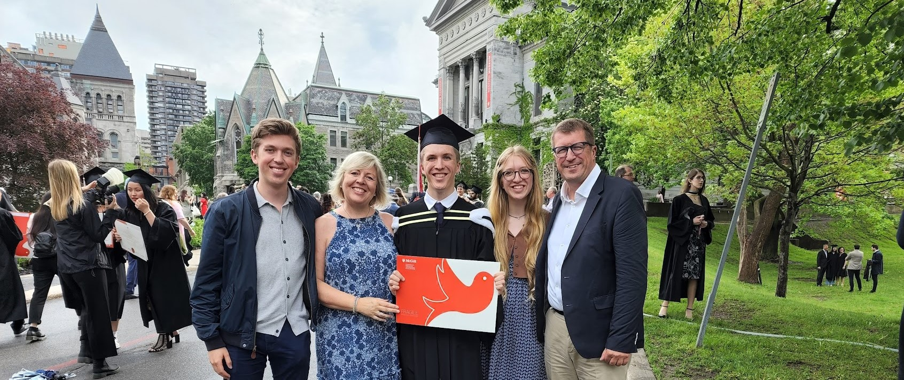
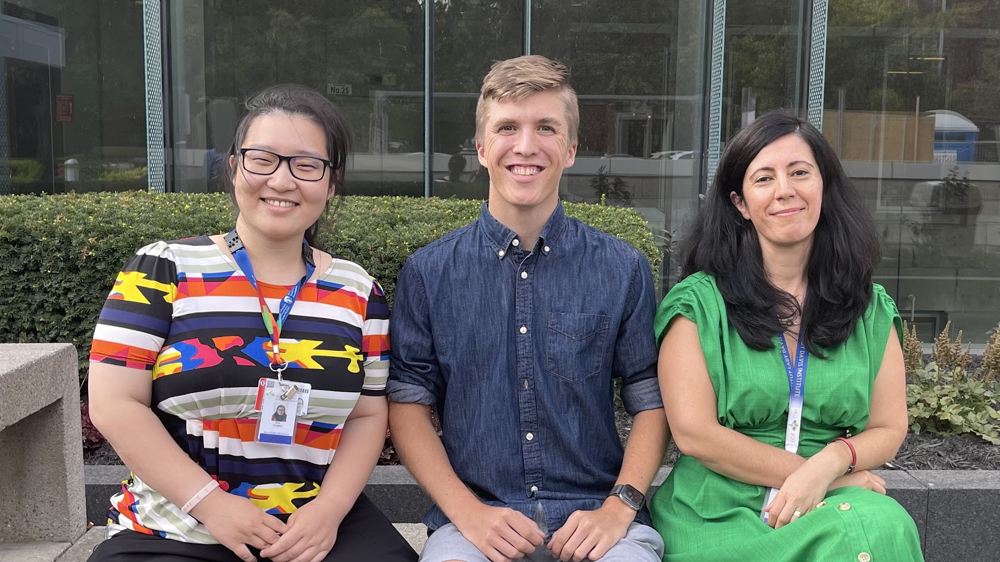

Short Biography

Born and raised in Germany, I moved to New York in 2007. There I attended the German International
School New York, earning a German Abitur as well as an American high-school diploma in 2018. By then
I was fortunate to have had my first research experience at the New York Medical College, which
motivated me to attend McGill, a research-oriented university. Here I earned a bachelor's degree in
Physics and four years of research experience in Medical Physics, working with Dr. Shirin Enger and
her exceptional lab group. I am now a PhD Candidate in Harvard-MIT's Health Sciences and Technology program,
conducting research in digital pathology within the Mahmood Lab at Brigham and Women's Hospital.
Research

I am a PhD Candidate in the Harvard-MIT Health Sciences and Technology (HST) Medical Engineering and Medical Physics program.
My research focuses on digital pathology in the Mahmood Lab at Brigham and Women's Hospital.
You can learn more about my past projects here.
Publications
Education
After moving from Germany to New York in 2007, I attended the German
International School New York (GISNY), where I founded the German Eagles
basketball team and served as the student body president. GISNY is where I first discovered my
passion for Physics thanks to my mentor, and friend Clemens Panitz, an exceptional and passionate
teacher and competed in the German Young Physicist Tournament. I earned a German Abitur (1.0) as
well as an American high-school degree (4.0 GPA).
My new found curiosity for Physics inspired me to pursue a Physics major at
McGill University. In addition to my Physics major, I pursued a
minor in Computer Science as the tools it taught me came in handy for both my major and my research.
Contact